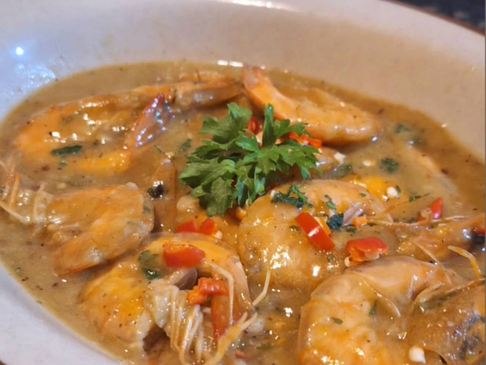
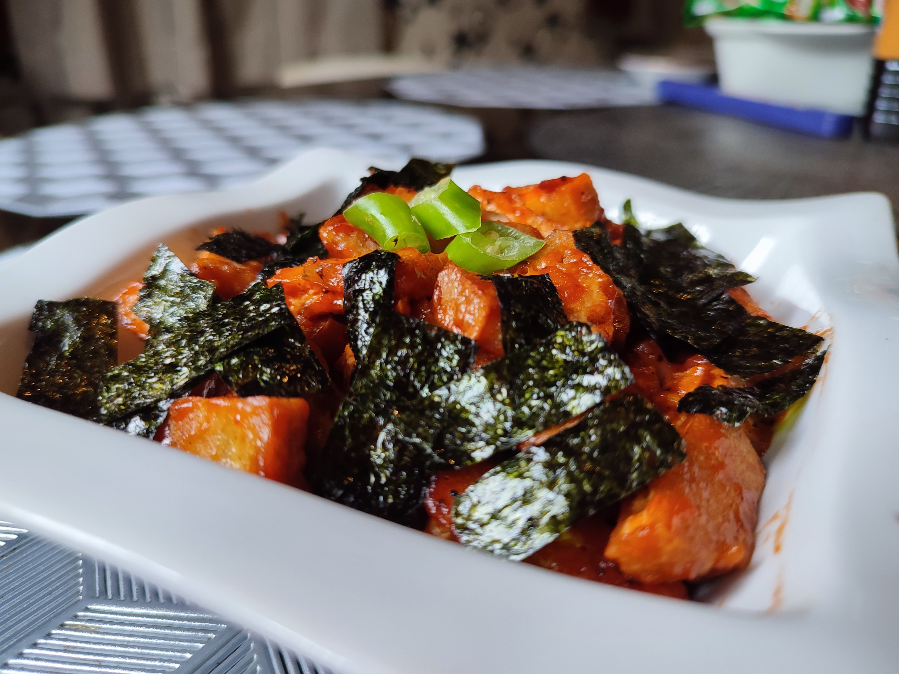
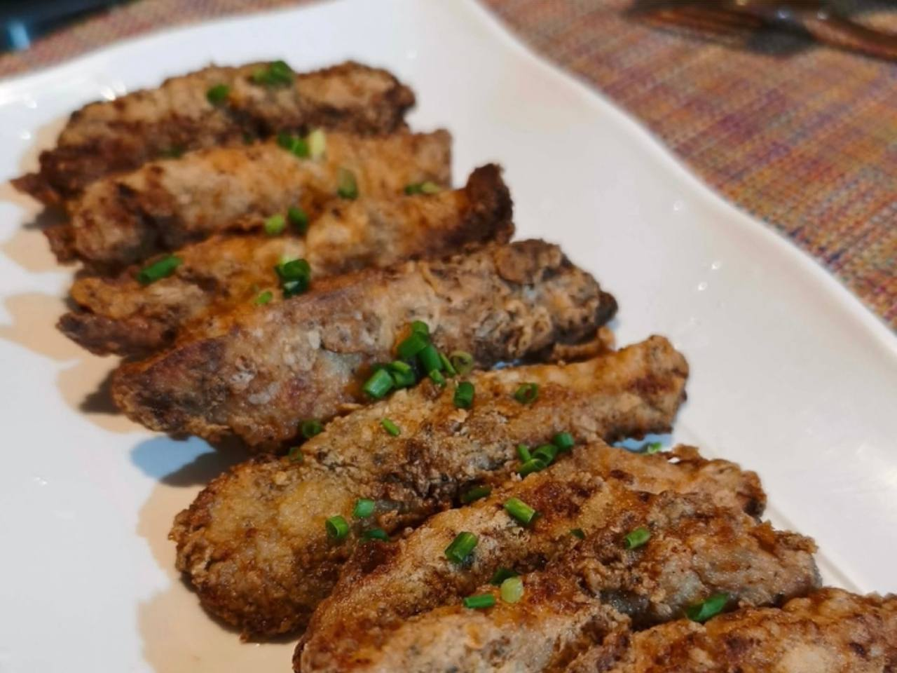
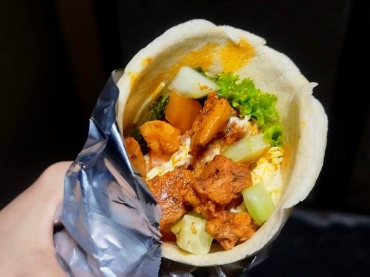
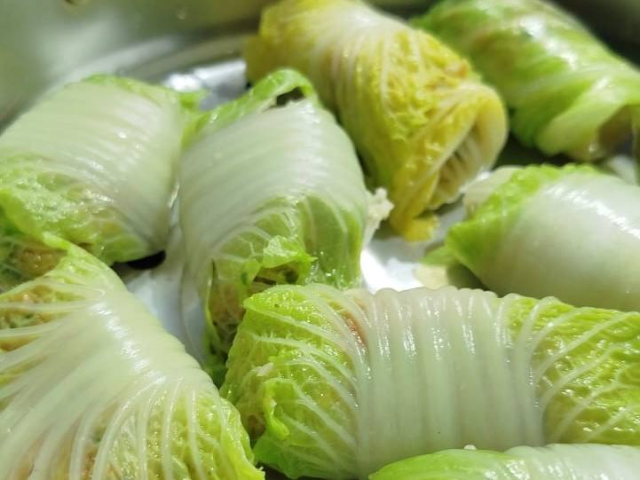
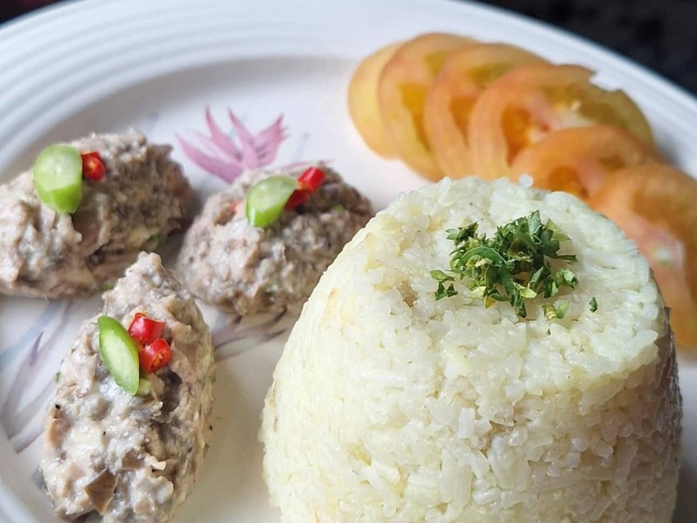
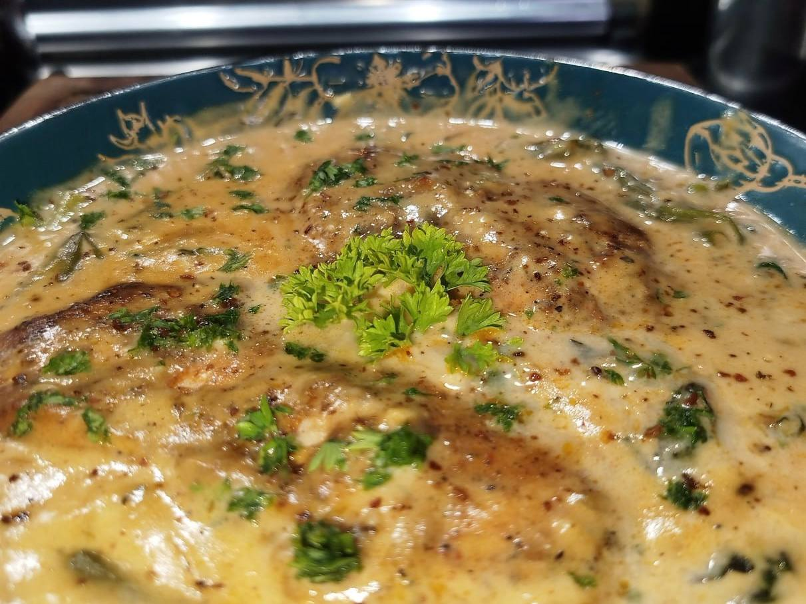

Ingredients
Procedure
This is a collection of recipes I personally cook and test. Most are inspired by food reels that I tweak in my own style, some are my own inventions, and a few are classic recipes na nilalagyan ko lang ng konting twist.

Savory, garlicky, at siksik sa butter with just the right amount of spice. Eto ang favorite ko lutuin kapag naghahanap ng "fancy" dinner pero literal na 15-20 minutes lang ang prep time.

A comforting, flavor-packed dish featuring tender tofu cubes simmered in a rich, velvety sweet and sour glaze. Infused with savory seaweed for an umami depth and fresh green chilies for a mild kick, this saucy delight is the perfect partner for a warm bowl of rice.
By mixing crispy, thick-cut fried tofu with raw onions and chilies, you get a perfect contrast of textures. Bound together with creamy mayonnaise and a zing of calamansi, this dish is topped with a runny egg and parsley for a restaurant-quality finish.
Level up your snack game with these Crispy Fried Mimosa Eggs. This recipe takes hard-boiled eggs to the next level by breading and deep-frying the whites for a satisfying crunch.

Elevate your classic chicken strips with the bold, aromatic flavors of basil and garlic. These Pesto Chicken Tenders are marinated in a rich pesto sauce before being breaded and fried to a perfect golden crunch.
Experience a burst of tropical sweetness with this Crispy Mango-Choco Toast. These bread pockets are stuffed with a generous amount of ripe mango and a hint of chocolate, then coated in Panko breadcrumbs for an ultimate crunch.
Indulge in a classic Filipino favorite that’s all about texture and richness. This Sipo Egg features delicate quail eggs swimming in a thick, buttery cream sauce packed with savory ham and crisp mixed vegetables.

This budget-friendly meal is the perfect balance of healthy and hearty. It features spiced marinated chicken and a variety of crisp vegetables wrapped in a homemade low-calorie egg-based pita.

A guilt-free delight that doesn't compromise on taste! These Chicken Cabbage Rolls feature a savory and juicy ground chicken filling seasoned with sesame and aromatics, all wrapped in tender, steamed cabbage leaves.

A sophisticated take on the beloved Filipino favorite. This Creamy Tuna Sisig replaces pork with lean tuna flakes, sautéed with aromatics and bound with a tangy, spicy mayonnaise dressing.

This dish is the definition of comfort food! It features tender, seared chicken bathed in a rich and velvety cream sauce infused with the deep flavors of sun-dried tomatoes and Parmesan. Topped with a sprinkle of vibrant parsley, it’s a sophisticated yet easy-to-make meal that lives up to its name.
This beloved Southeast Asian classic is the perfect marriage of creamy coconut-infused rice and sweet, sun-ripened mango. Each bite offers a velvety texture and a tropical sweetness that is both refreshing and deeply satisfying—a true comfort dessert for any occasion.
More recipes are being tested and documented.
Check back soon.